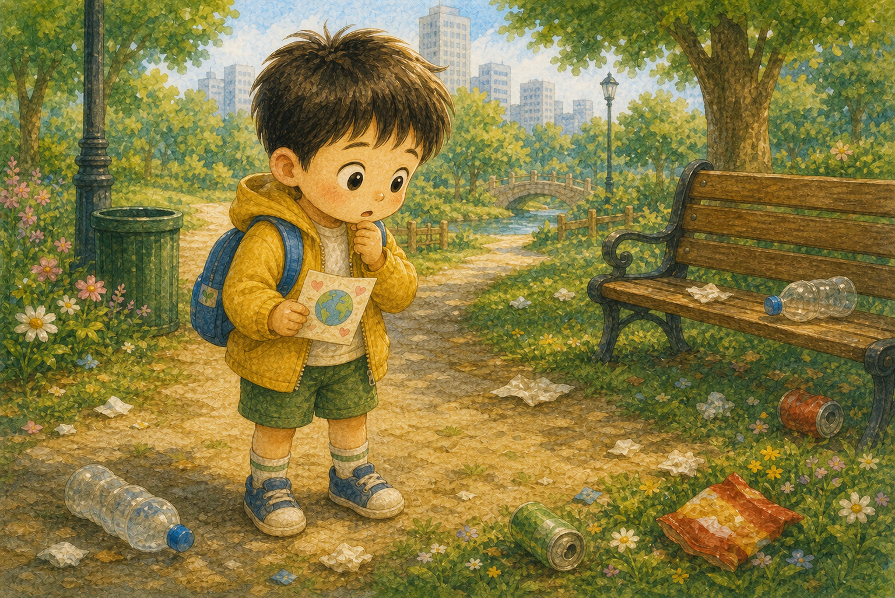
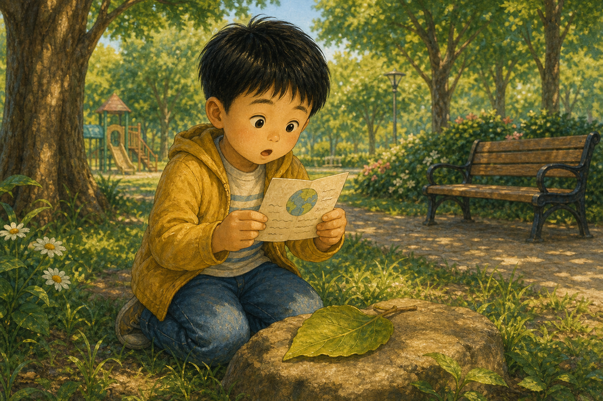
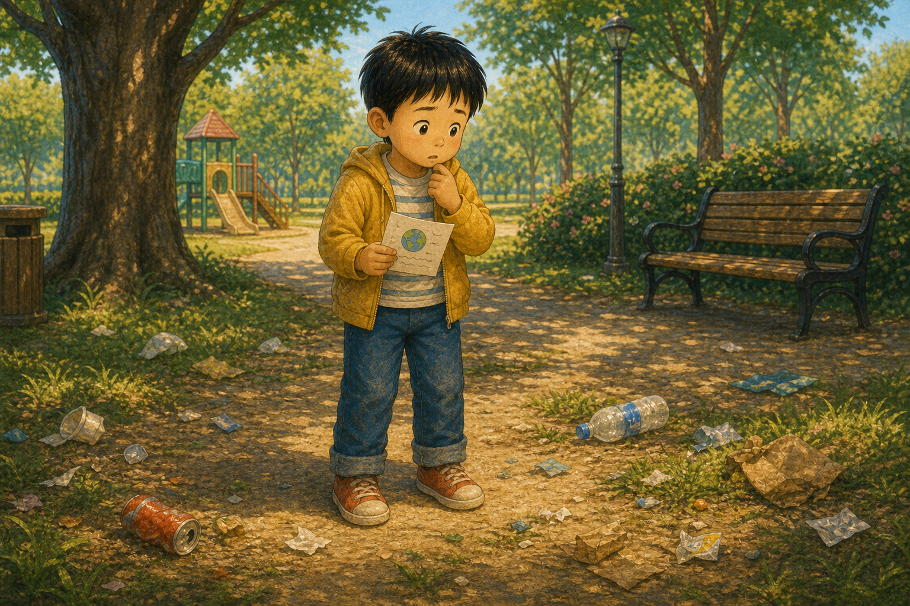
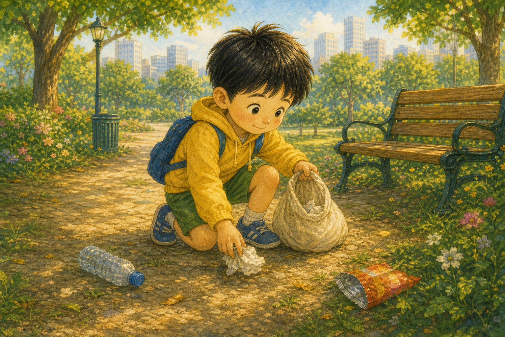
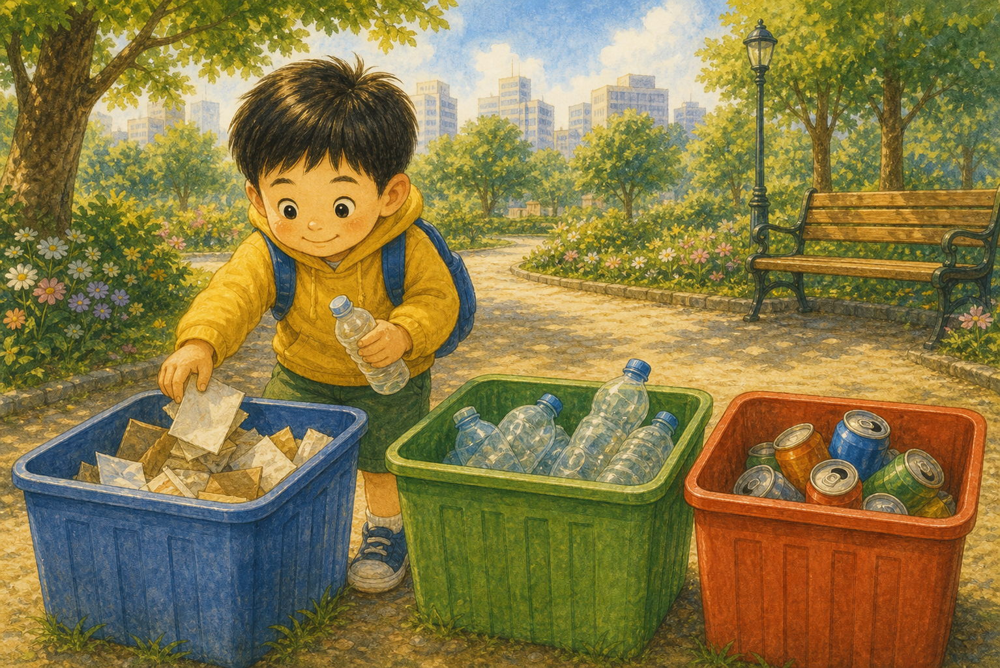
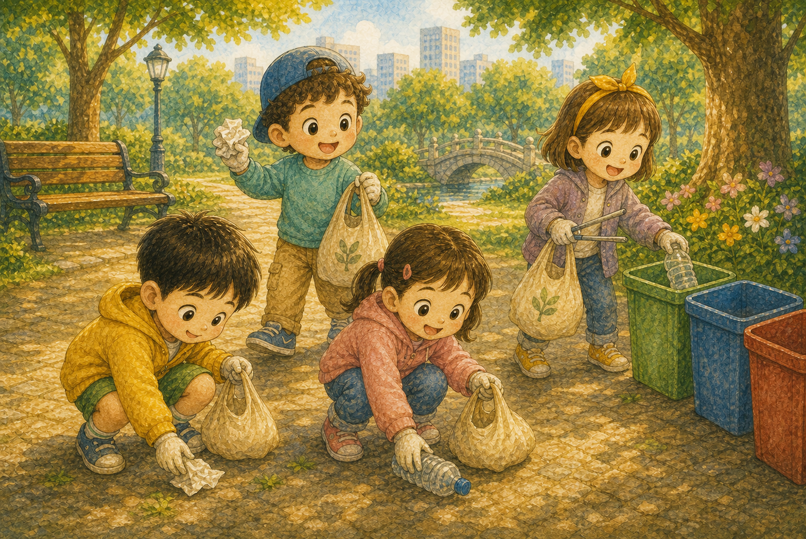
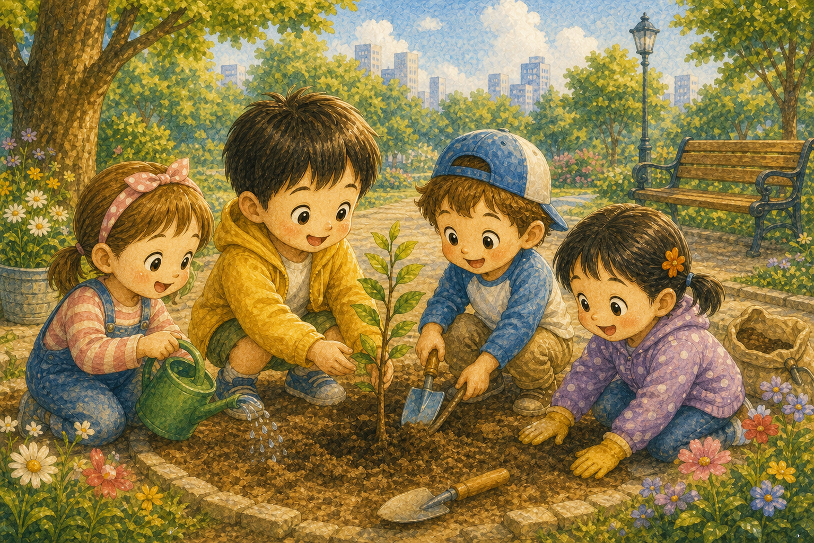
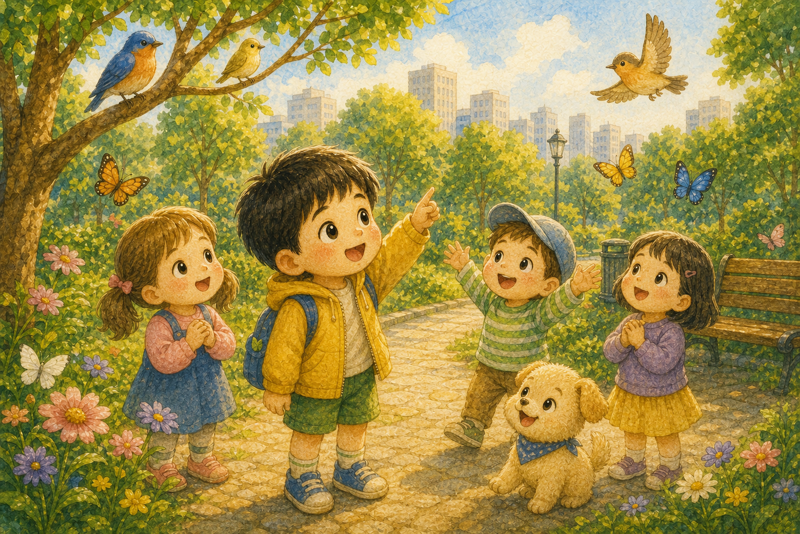
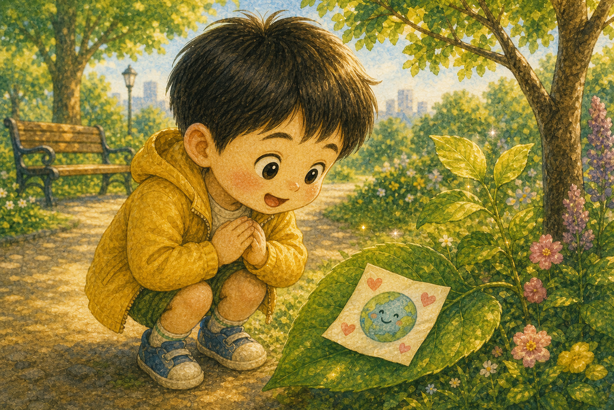
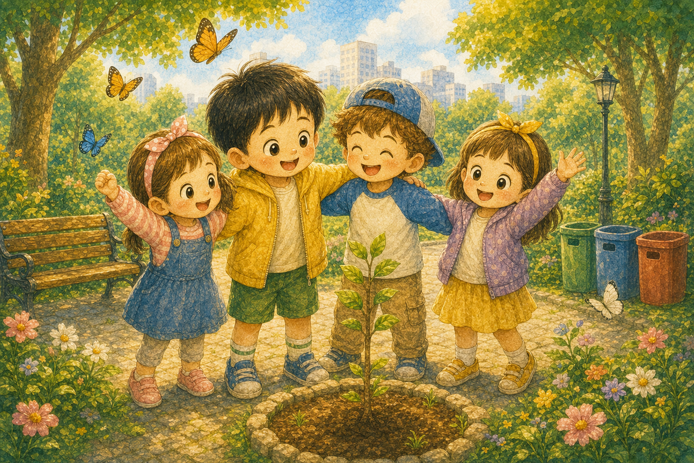

나뭇잎 위의 쪽지
한솔이는 공원에서 나뭇잎 위에 놓인 작은 쪽지를 발견했어요. 쪽지에는 지구가 보낸 편지라고 적혀 있었지요.
"누가 보낸 편지일까?"

한솔이는 공원에서 나뭇잎 위에 놓인 작은 쪽지를 발견했어요. 쪽지에는 지구가 보낸 편지라고 적혀 있었지요.
"누가 보낸 편지일까?"

쪽지에는 "안녕, 나는 너희가 사는 지구야"라고 쓰여 있었어요. 지구가 조금 지쳐 있다는 이야기였지요.
"지구가 나에게 편지를?"

둘러보니 공원 곳곳에 쓰레기가 흩어져 있었어요. 한솔이는 지구가 왜 지쳤는지 알 것 같았지요.
"이래서 지구가 힘들었구나."

한솔이는 봉투를 들고 쓰레기를 하나씩 주웠어요. 작은 손이지만 멈추지 않고 부지런히 움직였지요.
"내가 도와줄게, 지구야!"

한솔이는 캔, 종이, 플라스틱을 나누어 담았어요. 잘 나누면 다시 쓸 수 있다고 배웠으니까요.
"이건 다시 태어날 수 있대!"

지나가던 친구들도 한솔이를 도와 함께 청소했어요. 여럿이 힘을 모으니 공원이 금세 깨끗해졌지요.
"같이 하니까 훨씬 빨라!"

아이들은 빈 화단에 작은 나무 한 그루를 심었어요. 나무는 맑은 공기를 선물해 줄 거예요.
"무럭무럭 자라렴!"

공원이 깨끗해지자 새와 나비가 다시 찾아왔어요. 맑아진 자리에 생명들이 모여들었지요.
"새들도 다시 노래하네!"

나뭇잎 위에 새 쪽지가 살포시 놓여 있었어요. "고마워, 덕분에 다시 힘이 나"라고 적혀 있었지요.
"지구가 웃고 있어!"

한솔이는 작은 행동이 지구를 건강하게 한다는 걸 알았어요. 이제 쓰레기는 꼭 제자리에 버리기로 했답니다.
"우리가 지키면 지구도 웃어!"